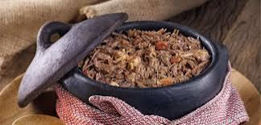

Barreado

O barreado é associado às festas de carnaval e outras festas populares da região, pois as pessoas comiam esse prato para poder repor as energias. Isso era possível pela alta carga calórica da receita e sua facilidade em ser feita.
A receita precisava de poucos ingredientes, era barata, de fácil preparo e que podia ser feita com antecedência, e mesmo requentado nunca perdia o seu sabor original. Além de dar muita energia aos foliões.
Há outros relatos que o barreado era comida de tropeiros que subiam a serra para comercializar erva-mate. Por muitos anos o barreado era consumido só pelas costeiras do Paraná, porém as cidades do litoral – Paranaguá, Antonina e Morretes reivindicam a origem do prato.
O prato não tem muito tempo que subiu a serra, no início dos anos 70 passou a fazer parte da gastronomia dos restaurantes de Curitiba.
Informações da receita
Ingredientes
Modo de Preparo – Receita de Barreado
- Cortar a carne em cubos de 2 cm.
- Em uma vasilha plástica, juntar a carne, o bacon, as cebolas, os dentes de alho, o cominho, o vinagre, o sal e a pimenta do reino.
- Misture tudo muito bem e deixe descansar por uma hora.
- Adicionar o óleo de milho em uma panela de barro (de 5 l), untando-a por dentro e levar ao fogo brando.
- Quando o óleo estiver bem quente, acrescentar a carne temperada, mexer bem com uma colher de pau durante cinco minutos.
- acrescentar a água fervente.
- tampar a panela e barrear a tampa com pirão de farinha de mandioca;
- deixar cozinhar por cinco horas.
- após, abrir a panela e verificar o nível da água (2 cm acima da carne) e o sal, se necessário, completar.
- Acrescentar as folhas de louro.
- tampar e barrear novamente a panela e deixar cozinhando por mais quatro horas.
- levar a panela, com cuidado à mesa, servir em prato fundo, acompanhado de farinha de mandioca crua e banana prata.
- Para esta receita ser servida no almoço eu começo o primeiro cozimento às 19:00h horas e desligo o fogo às 24: 00 h.
- na manhã seguinte, às 08: 00 horas, após verificar o nível da água e o sal, tampo e barreio novamente a panela, religo o fogo e deixo cozinhando até às 12:00 horas.